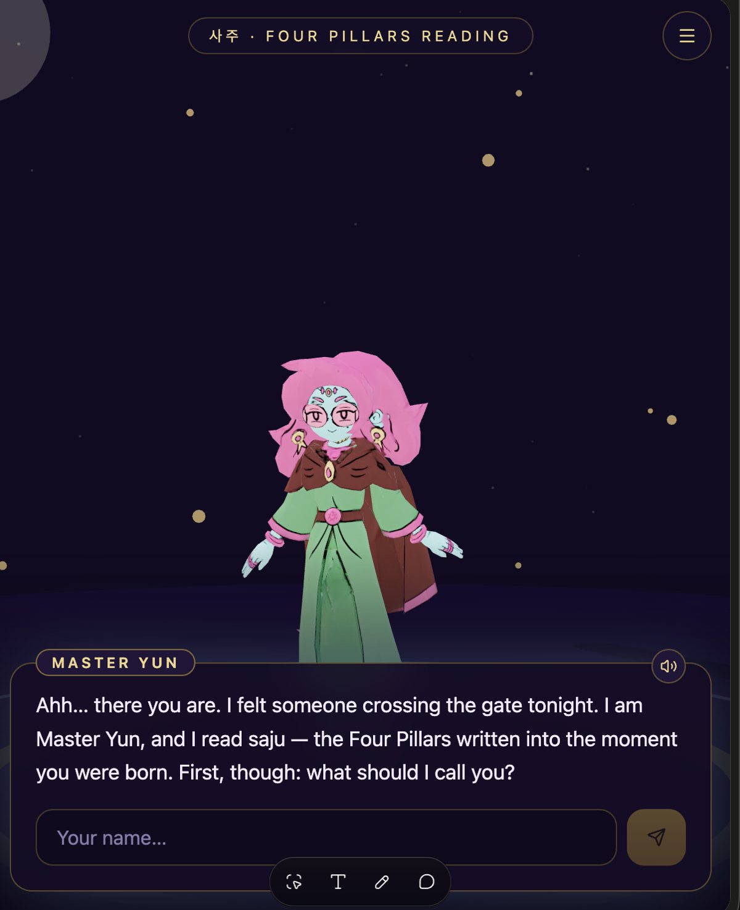
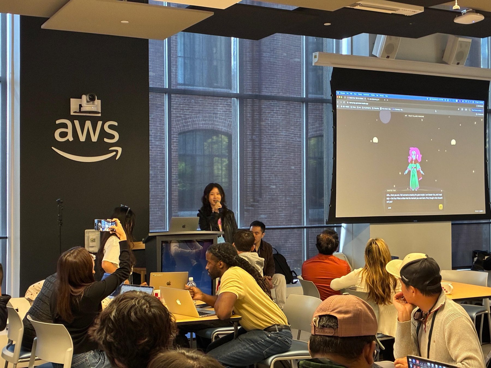

Master Yun
A Korean saju reader you can talk to, blended with the astrology Americans already know.

- Format
- Hackathon build
- Where
- AWS Loft hackathon
- Built with
- GitHub, Lovable, ElevenLabs
- Live
- karma-key-generator.lovable.app
Saju, translated for an American audience
Saju reads your future from the Four Pillars of your birth moment. Koreans see a saju reader the way Americans compare star signs. The AWS Loft hackathon was my chance to build one as an agent.
Saju alone would feel foreign to the room, so I paired it with Western astrology and had a character say the reading out loud.
A reader you can talk to
A character who asks your name and talks you through it, not a form that prints a chart.Saju meets astrology
The Four Pillars combined with the zodiac, so the reading lands for an American user.Trying ElevenLabs voice
Master Yun speaks every line, to test how far a voice can carry a character.- In tech
- Four Pillars calculation mapped to Western astrology, voiced through the ElevenLabs API
- For humans
- A fortune teller who greets you by name and talks you through your stars.
Do the hard logic early, assemble on the day
The hard part was making saju and astrology fit together, so I built that engine on GitHub beforehand. The hackathon went to the experience: character, conversation, voice.
The reading engine
A mechanism that combines the Four Pillars with Western astrology into one reading.
The app and Master Yun
The web app, the 3D character under a night sky, and the chat that collects your details.
The voice
Every line Master Yun says is spoken aloud, so the reading feels like a conversation.
A voice-guided reading about love, money, career and destiny
It starts with a greeting
“Ahh... there you are. I felt someone crossing the gate tonight. I am Master Yun.”
- Master Yun asks what to call you before anything else
- You share your birth details in the chat
- Master Yun reads your Four Pillars and answers questions on love, money, career and destiny, out loud
Live at AWS Loft
I demoed Master Yun live on the big screen.

Want your own reading?
Talk to Master Yun ↗